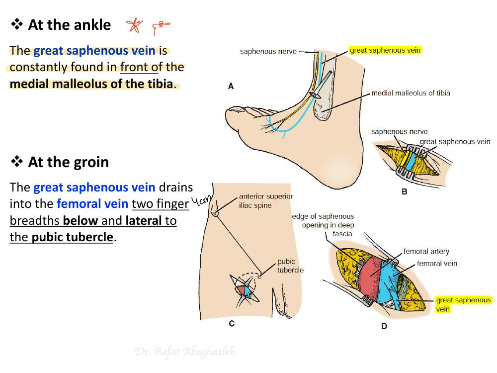
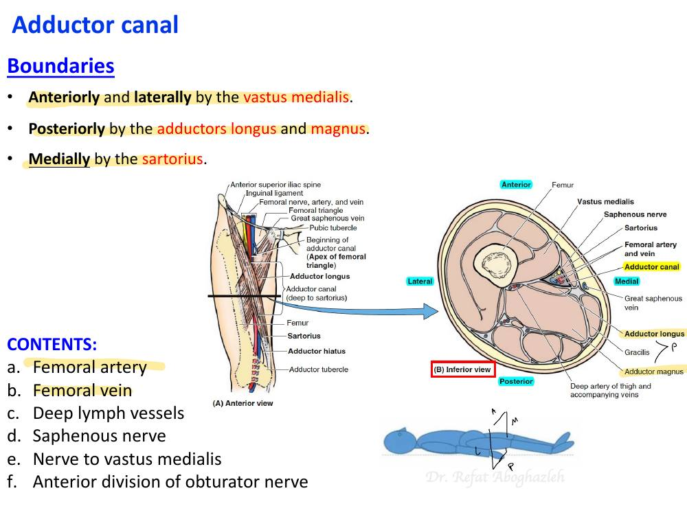
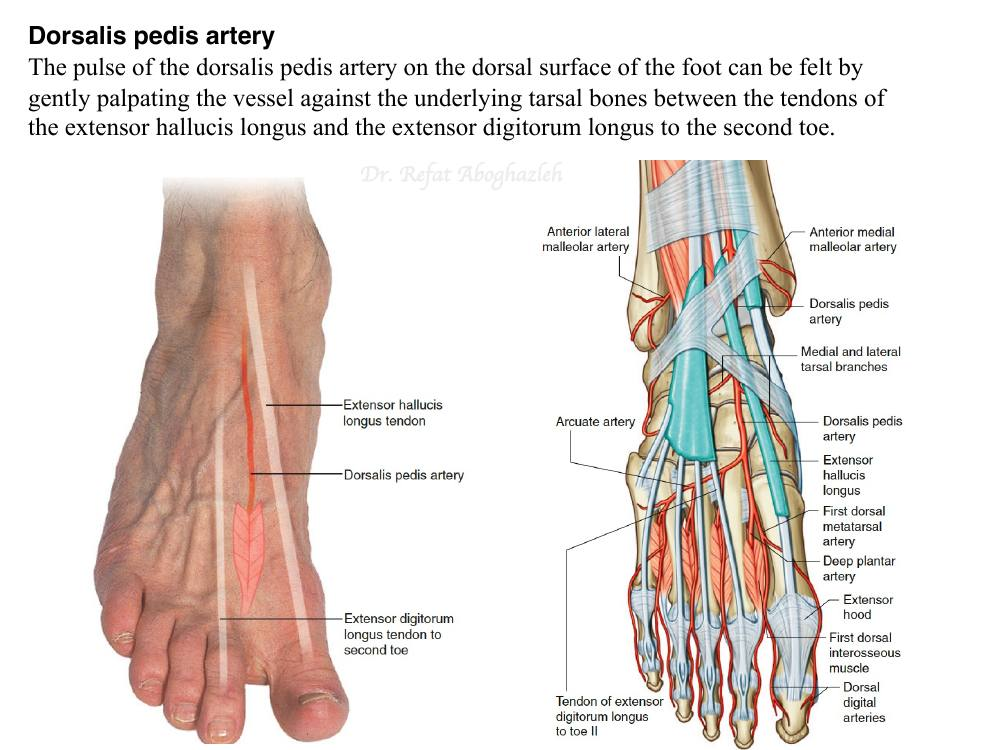

Arterial route
External iliac → femoral beneath the inguinal ligament. Femoral → popliteal through the adductor hiatus. At the lower border of popliteus, the popliteal divides into anterior and posterior tibial arteries.
Deep veins follow the arteries: paired tibial veins → popliteal → femoral → external iliac.
Superficial veins
| Vein | Ankle landmark | Companion nerve | Drainage |
|---|---|---|---|
| Great saphenous | Anterior to medial malleolus | Saphenous | Femoral vein through saphenous opening |
| Small saphenous | Posterior to lateral malleolus | Sural | Usually popliteal vein |
The saphenous opening transmits the great saphenous vein, small arterial branches and lymphatics. The great saphenous vein joins the femoral vein about 4 cm inferolateral to the pubic tubercle. Its tributaries are superficial circumflex iliac, superficial epigastric, superficial external pudendal and accessory saphenous veins. Perforators direct blood toward deep veins. The medial ankle landmark is useful for venous cutdown; the vein can also serve as a coronary bypass graft. Its valves must be oriented or treated to allow forward flow. The small saphenous vein can also join the great saphenous vein or divide to drain into both the great saphenous and popliteal veins.

Great saphenous vein
Trace it in front of the medial malleolus and into the femoral vein at the groin.Thigh and adductor canal
Feel the femoral pulse at the mid-inguinal point, halfway between the anterior superior iliac spine and pubic symphysis. In the upper triangle, lateral to medial: femoral nerve → artery → vein. The nerve lies outside the femoral sheath. Ascending from the hiatus, the femoral vein moves from lateral to posterior to medial relative to the artery.
The superficial inguinal branches of the femoral artery are the superficial epigastric, superficial circumflex iliac and superficial external pudendal arteries. The profunda femoris typically arises laterally about 4 cm below the inguinal ligament. It gives the medial and lateral circumflex femoral arteries and three perforators. Its terminal branch is often counted as the fourth perforating vessel. The obturator artery comes from the internal iliac and enters the medial thigh through the obturator canal.
The adductor canal runs deep to sartorius, between vastus medialis and the adductors. It carries femoral vessels and the saphenous nerve. The nerve to vastus medialis and anterior obturator division are also listed in the lecture. The hiatus lies just superior and lateral to the adductor tubercle. Only the femoral vessels pass through the adductor hiatus into the popliteal fossa.

Adductor canal in cross-section
Find the femoral vessels and saphenous nerve beneath sartorius.Popliteal fossa and collateral flow
Superficial to deep: tibial nerve → popliteal vein → popliteal artery. Flex the knee to palpate the deep popliteal pulse. The genicular network links femoral, popliteal and tibial branches and maintains flow when the popliteal artery is compressed in deep flexion.
Popliteal fossa
The artery is deepest. Trace the vein and tibial nerve superficial to it.| Hip anastomosis | Contributors |
|---|---|
| Trochanteric | Superior and inferior gluteal + medial and lateral circumflex femoral |
| Cruciate | Inferior gluteal + both circumflex femorals + first perforator |
Superior and inferior gluteal arteries leave the greater sciatic foramen above and below piriformis, respectively. The medial circumflex femoral artery supplies most of the adult femoral head through retinacular branches, which can tear in an intracapsular neck fracture.
Leg, foot and pulses
| Vessel | Course and endpoint |
|---|---|
| Anterior tibial | Through the interosseous membrane into the anterior compartment with the deep fibular nerve. Becomes dorsalis pedis at the ankle. |
| Posterior tibial | Gives the fibular artery and passes behind the medial malleolus under the flexor retinaculum. Divides into medial and lateral plantar arteries. |
| Fibular | Runs in the deep posterior compartment. Perforating branches supply the lateral compartment. |
| Deep plantar arch | Lateral plantar artery joins the deep plantar branch of dorsalis pedis. |
Plantar branches: The medial plantar artery is the smaller terminal branch of the posterior tibial artery. The larger lateral plantar artery crosses the sole and joins the deep plantar branch of dorsalis pedis, which reaches the sole through the first intermetatarsal space.
Pulse landmarks: dorsalis pedis lies just lateral to the extensor hallucis longus tendon. The posterior tibial pulse is behind the medial malleolus.

Dorsalis pedis pulse
Find the pulse lateral to the great toe extensor tendon on the dorsum of the foot.MCQs
No incorrect answers in this attempt yet.